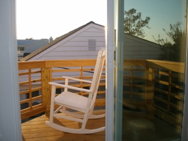
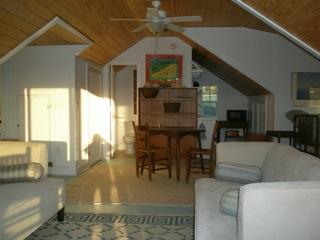
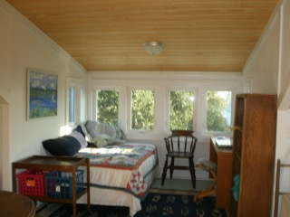
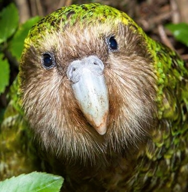

Developmental Editor / Author

Susan Schmidt, PhD
(252) 269-0032
BEAUFORT WRITING GROUP / KAKAKO PRESS
DEVELOPMENTAL EDITOR / AUTHOR
See Susan's Editorial Freelancers Profile
An agent told Susan’s client, “This is the sharpest improvement I've ever seen from the first to the second draft.”
Susan is listed among Top Ten Editors in New England.
As Developmental Editor, I advise authors how to revise manuscripts with the same mindfulness as pruning apple trees. I polish scholarly and popular history and science, journal articles, dissertations, novels, memoirs into publishable books. In structural critique, I recommend how to shape, focus, fine-tune narrative voice, tone and trajectory to target an audience. As retired English professor, I am a master stylist. As copyeditor and proofreader, I mark grammar, spelling, punctuation, syntax, structure, word choice. I address clarity, consistency, repetition, flow, transitions. I change passive to active voice and multisyllable nouns to a strong verb. In a popular-science book, we moved differential equations to sidebars, added topic sentences, divided 200-word sentences and eight-syllable words; reviewer praised his “crisp writing.” I am fluent in French and German. I have a PhD in American lit; Masters in Environmental Sciences and British Lit; postdocs in botany and bioethics. For 30 years in university, I taught literature & environmental decision-making. I worked as scientist, journalist, sailboat captain. I had grants from Fulbright, EPA, NSF, NEH, NEA, AAUW.
Editing client’s agent reviews:
“In all my years, this is one of sharpest improvements I've ever seen, from the first draft that I read to the second. It's amazing how far you've come.”
Other clients wrote: “Your editing is a terrific boon. Thank you for your support, critique, attention to detail, better expressions, alternate words, huh?-questions, format consistency. I can’t imagine writing another book without you as editor.”
“This is great, great, great. You are a treasure trove of ideas! Your critique was sooo helpful. Concrete suggestions. I've lots of work to do, but feel inspired to get back to the work. Just what I wanted.”
Beaufort, NC Writing Retreat
One-room quiet upstairs apartment (~700 sq ft) with dormer-alcove bed and desk, kitchenette, & bathroom. Seabreeze, sunset deck, & gardens. One block from Rachel Carson’s Bird Shoal. Mile from great restaurants, coffee shops, winebar, grocery, seafood; ferries to Shackleford Banks & Cape Lookout. Wireless, kayak, & bicycle available.
  
Susan Schmidt, PhD (252) 269-0032
Susan started Kakapo Press and has published four books.

Photo of kakapo by Sabine Bernert
Crown © Department of Conservation
| © 2012 Susan Schmidt. All Rights Reserved. |
Find Current Book Reading Schedule
 |
 |